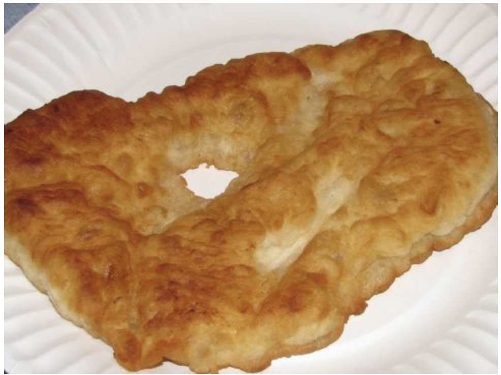

ingredients
- 2 cups oil for frying
- 4 cups all-purpose flour
- 3 tablespoons baking powder2 tablespoons salt
- 2 1/2 cups warm milk
directions
- In a large heavy bottomed frying pan, heat 1 inch of vegetable oil or lard to 365 degrees F (185 degrees C).
- In a large mixing bowl, combine flour, baking powder, salt and milk; mix well. When the dough has pulled together, form it into small balls and pat them flat.
- Place 3 or 4 at a time into the hot oil. When the rounds begin to bubble, flip them over and cook until golden. Drain on paper towels and serve hot.
contact me
email me!
Fry Bread Recipe
Simple but Delicious ingredients
